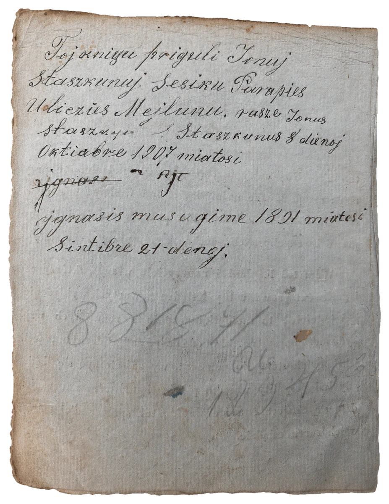
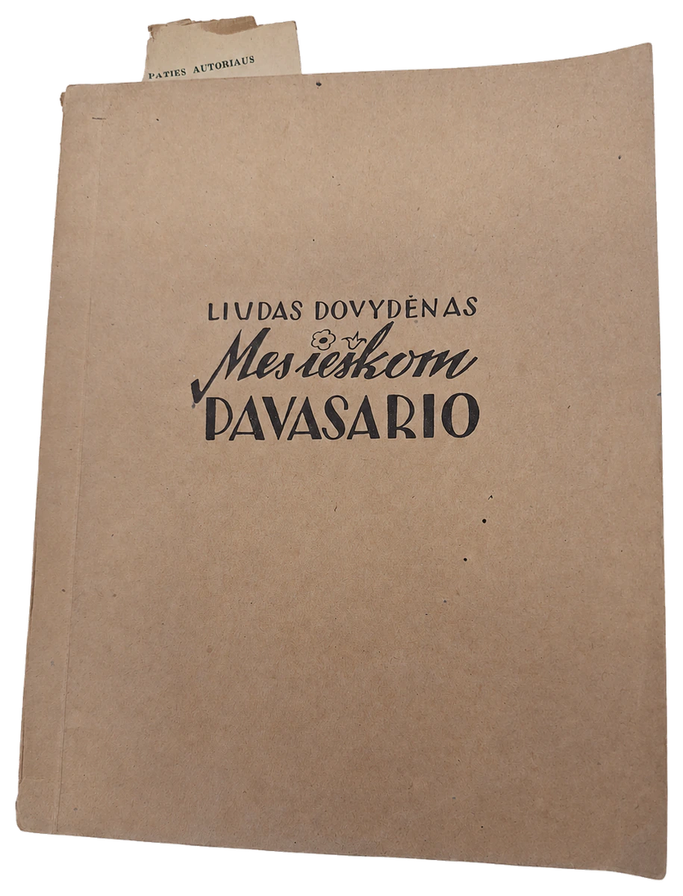

We prepare our memory and our young people for the world they are inheriting.
Žiburio Foundation, a Michigan nonprofit, is the permanent steward of Lithuanian diaspora cultural memory. It digitizes and opens diaspora archives with AI and human review, and young people from the community do much of the work.


Every source passes through the same four steps.
Digitize
The source is photographed, catalogued and preserved.
Extract
AI reads it and identifies the people, places, institutions and events it mentions.
Review
People check every identification, and uncertain cases are held for human judgment.
Link
Each confirmed fact is tied to the page it appears on, so any claim can be traced back and verified.
Three public resources draw on that work.
Žiburio Archive
The sources. 326 published records from 513 catalogued items.archyvas.ziburioltmokykla.org ↗
Lietuva.AI
The connected record, in beta, with every source cited and visible. Operated independently by Žiburio Foundation.lietuva.ai ↗
Save Our Lithuanian Parishes
The record applied: a public registry of 155 Lithuanian institutions in the United States.saveourlithuanianparishes.org ↗
Skaitmeniniai Knygnešiai
Digital Book Carriers. Seven high-school interns scan and catalogue the archive's books, build their Lithuanian, and learn the responsible use of AI by working directly with primary sources.
An apprenticeship in cultural inheritance.
Learn to steward. Learn to notice. Make something from what you found. Next
Perhaps preservation becomes inheritance when someone new begins asking questions of it.
How will we prepare our memory, and our young people, for the world that is coming?
The human being remains responsible for memory. AI helps us see more within it.
Žiburio Foundation cannot become an AI company.
The community holds its own memory, governs access to it, builds its own intelligence from it, and does not lose it.
Representation is not inheritance.
A corpus is not a culture.
A method other communities can follow. Next
Support the work.
Žiburio Foundation is a Michigan nonprofit. Ways to support the work will be listed here. Write to Vilija Jurgutis, Executive Director.